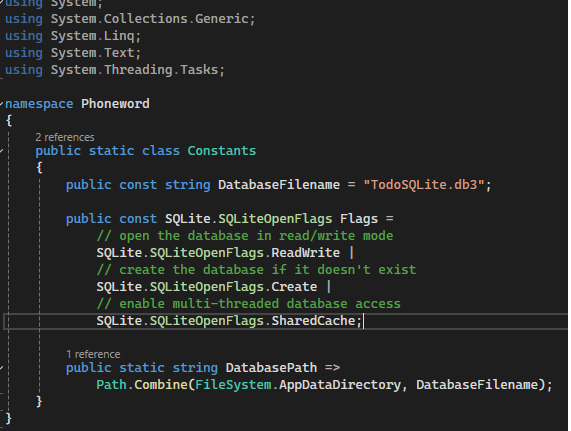
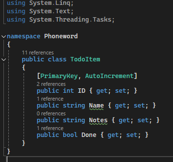

In this article, we see how to create and connect to an sqlite in Visual Studio. To this end, first create an empty MAUI project in Visual Studio 2022. 1. First, and foremost, we should install sqlite-net-pcl package using Nuget package manager. 2. After that, create a class namely Constant.cs to give credentials of connection as below, change namespace name as you created (Phoneword)  3. We then create a class called "ToDoItem.cs" to give fields of table as below:
 4. "ToDoItemDatabase.cs" will define the operations on database we have as below:
using SQLite;
using System;
using System.Collections.Generic;
using System.Linq;
using System.Text;
using System.Threading.Tasks;
using SQLitePCL;
namespace Phoneword
{
public class TodoItemDatabase
{
SQLiteAsyncConnection Database;
public TodoItemDatabase()
{
}
async Task Init()
{
if (Database is not null)
return;
Database = new SQLiteAsyncConnection(Constants.DatabasePath, Constants.Flags);
var result = await Database.CreateTableAsync